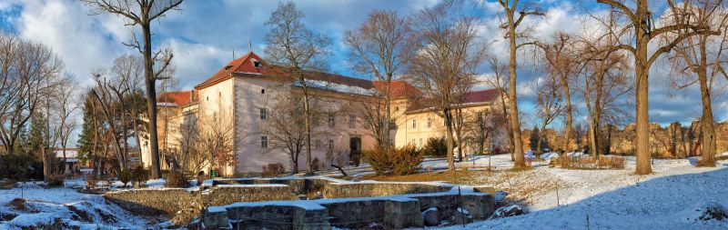

Доброго вечора, мене звати Паша і це моє перше д/з
Основні переваги для мене, щоб перейти в IT:
- Можливість працювати з будь-якого куточку планети
- Можлтвість постійно розвиватися, так як технології не стоять на місці
- Робочий графік формуєш сам собі, якщо працювати на Freelancre біржах
- Багато вільного часу, який в майбутньому можна буде присвятити сімʼї
- Непоганий і стабільний дохід в іноземній валюті
- Можливість працювати на світовому ринку
Зараз трошки історії про рідний край
Закарпаття – багатонаціональний край. За доволі короткий період часу на території було 5 різних країн. Кожна з них наклала власний відбиток на історію області та тих, хто живе тут. Журналісти IGotoWorld.com зібрали список місць, які, на нашу думку, чудово було б відвідати мандрівнику.
Музей народної архітектури та побуту
Аби одразу відчути серце регіону, вам необхідно завітати в ужгородський скансен. Попри те, що Закарпатський музей народної архітектури та побуту охоплює усього 2 гектари землі, на схилах Замкової гори, він має про що розповісти мандрівнику. Гуляючи територією, побачите традиційну народну архітектуру Закарпаття 17 – першої половини 20 століття. У скансені ви зможете ознайомитися і з чималим зібранням творів традиційного мистецтва.
Зверніть увагу на колекцію народного одягу. Вона цілком розкриває традиції всіх етнографічних та етнічних груп Закарпаття, які проживали на території краю у 19 – першій половині 20 століття.
Вже кілька років поспіль у музеї влаштовують покази одягу на моделях, що значно пожвавлює сприйняття нашим поколінням традицій предків.
Час роботи: щодня, крім вівторка
- Влітку: з 10:00 до 18:00, на території музею можна гуляти до 20:00.
- Взимку: з 9:00 до 17:00.
Вартість квитка:
- Для дорослих – 35 грн.
- Для студентів – 20 грн.
- Для дітей віком від 7 років – 15 грн.
- Тематична екскурсія для групи дорослих – 120 грн, для групи дітей – 80 грн.
- Є можливість замовити індивідуальну екскурсію (від однієї до п’яти осіб), ціна – 80 грн.
Ужгородський замок
Цей замок має цікаву історію, овіяний захоплюючими легендами і, звісно, може похвалитися унікальною експозицією. Згадується він ще з 9 століття. З 1947 року він використовується як краєзнавчий музей. А у 2009-му Ужгородський замок посів 2-ге місце у конкурсі «7 чудес Закарпаття».
Закарпатський художній музей імені Йосипа Бокшая
З 1979 року він розміщений у самісінькому центрі Ужгорода, в будинку колишнього жупанату . А все тому, що експонатів стало занадто багато. Для них потрібно було більше простору. З приватних колекцій, українських та закордонних музеїв назбирали понад 5 тисяч витворів мистецтва, які потрібно побачити бодай раз.
Як знайти: якщо ви прямуєте з вулиці Капітульної, де розташований скансен, пройдіть вулицею Волошина, перейдіть через площу Корятовича і ви опинитеся зовсім поруч. Орієнтир – невеличкий парк, де застигли у бронзі два художники – Йосип Бокшай та Адальберт Ерделі.
Ціна за квиток:
- дорослий – 30 грн
- студентський – 15 грн
- дитячий – 5 грн
Міні скульптури
Бонусом для туриста, який приїде в обласний центр Закарпаття, стане велика кількість міні-скульптур. Їх в Ужгороді вже понад 3 десятки.
Розроблена карта з монументами у мініатюрі, але міні-скульптури з’являються так швидко, що ви завжди знайдете їх скоріше «вживу», ніж на світлинах путівника.